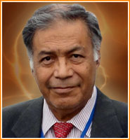

Dr. Isaac Goiz Durán
 |
El equipo de colaboradores de la Guía de Biomagnetismo despedimos y honramos al Dr. Isaac Goiz Durán, quien partió de este plano el pasado 27 de marzo del 2021. |
Antecedentes:
El Dr. Isaac Goiz Durán nació el 13 de abril de 1941 en la ciudad de Puebla, estado de Puebla. A los 18 años se hizo cargo de sus 9 hermanos ya que su padre entró al seminario para convertirse en sacerdote. Goiz Durán empezó a trabajar en PEMEX y trabajo ahí durante 4 años. Tuvo muchos puestos entre chofer, jefe de almacén, y otros. En el año 1964 estudió en la Escuela de Fisioterapia Adele Ann Iglesias, Hospital Americano Británico Cowdray (incorporado a la UNAM), en la Ciudad de México.
Cuando terminó la carrera técnica en Fisioterapia empezó a dar clases de natación, física médica, y otras. Ese mismo año, trabajo en el Instituto Nacional de Neumología. Goiz se mantuvo en este durante 20 años a cargo del Departamento de Medicina Física y Rehabilitación. Aquí es donde conoce la Sra. María Elena Martínez Carbajal (su futura esposa), quien trabajaba en el Departamento de Nutrición.
En el año 1977 ingresó a la Escuela de Medicina de la Universidad Autónoma de Puebla, donde obtuvo el título de Médico Cirujano y Partero en el año 1984 con Cédula Profesional 813725. Trabajó como médico y fisioterapeuta mientras tomó diferentes cursos y diplomados en medicinas alternativas; entre ellos el curso de Energy Therapy del Dr. Richard Broeringmeyer.
El Dr. Goiz, inspirado en las enseñanzas del Dr. Richard Broeringmeyer, en conocimientos médicos de fisioterapia y otras disciplinas y en el libro “Física Médica” del autor Otto Glasser, descubrío el Par Biomagnético, al tratar a un paciente que sufría de VIH en el año de 1988.
Trayectoria:
Libros:
El compendio de su obra está escrito en 5 libros los cuales son: “El Par Biomagnético”, “El Fenómeno Tumoral”, “El SIDA es curable”, “Fisiopatología Bioenergética” y un libro de poemas titulado “¿Qué puedo dar de mí?”.
Legado:
A lo largo de más de 3 décadas descubrió más de 350 pares biomagnéticos, que permiten curar distintas patologías, ya sea causadas por agentes patógenos, disfunciones o alteraciones psico-energéticas.
A partir de 1996 impartió el primer seminario para formar terapeutas en biomagnetismo médico. Continuó con la labor de difusión y enseñanza del biomagnetismo impartiendo cursos y seminarios en varios países; lo que ha permitido que ahora su sistema sea practicado por miles de terapeutas a nivel mundial.
En 1995 el biomagnetismo dió un salto "cuántico" ya que se llevó a cabo en forma exitosa la primera sesión a distancia estando el Dr. Goiz en la Ciudad en México y su paciente en Italia, a partir de ahí se desarrolló un nuevo nivel de tratamiento que el Dr. Goiz llamó "Telebioenergética".
Su sistema ha sido reconocido por diversas universidades de varios países como la Universidad de Chapingo, en México donde su sistema se imparte a nivel diplomado; en Ecuador por la Universidad Nacional de Loja. Por su parte, en España, ya se aplica ampliamente y el sistema se enseña en varias escuelas de terapias alternativas, en 2010 se creó la Asociación Española de Biomagnetismo Médico para agrupar a los profesionales que ya trabajan con el biomagnetismo. En Africa las Doctoras Italia Oloarte Pirroni, María Dolores Bustamante y Lilián Diner en forma altruista llevaron el biomagnetismo a una comunidad pobre de Beira, Mozambique. Curaron a cientos de enfermos a la vez que ofrecían un seminario a toda persona interesada, desde profesionistas, hasta analfabetas con el objetivo de capacitar a todo aquel que estuviera interesado en el sistema.
Universidades donde se impratieron los cursos en el año 2015:
1.- Universidad de San Nicolás de Hidalgo (Michoacán, Morelia)
2.- Benemérita Universidad Autónoma de Puebla (Puebla, Puebla)
3.- Universidad Autónoma Chapingo (México, Texcoco)
4.- Universidad Autónoma Agraria Antonio Narro (Saltillo, Coahuila)
5.- Universidad Autónoma de Coahuila (Torreón, Coahuila)
6.- Instituto Tecnológico de los Trabajadores (Monterrey, Nuevo León)
7.- Real Centro Universitario Escorial María Cristina (Madrid, España)
El 27 de marzo de 2021 el Dr. Isaac Goiz falleció en la ciudad de Puebla, México. Descanse en Paz el padre del Biomagnetismo Médico.